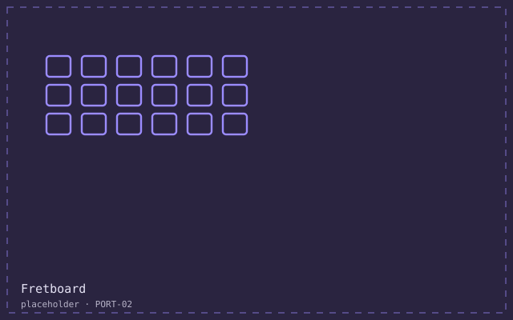

What it is
A personal project that became the thing people email me about.
The problem
Every browser tab editor I tried was either a toy that could not play what you wrote, or a 4 MB application that needed an account. I wanted the middle: a real editor, offline, that a guitarist could drive entirely from the keyboard while holding an instrument.
How I built it
- Model the tab as data first, render second: the canvas is a view, never the source of truth.
- Every editing action has a key binding and a visible menu item, because a player with a guitar in their lap cannot use a mouse.
- Audio is scheduled ahead of time in a single Web Audio graph, so playback does not drift when the tab is backgrounded.
- Ship as one HTML file plus one script; the whole thing caches and runs offline.
What it looks like
Where it got to
- 48 KB total, 11,000 monthly players, no server.
- Full keyboard operation, confirmed with a screen reader for the editing surface and a text equivalent for the score.
- Three guitar teachers use it in lessons, which is the only adoption number I care about.
What I would do differently
The canvas is not the document
Rendering from a data model made undo, export and the text equivalent nearly free. The first version drew straight to the canvas and I rewrote it in a weekend.
Key bindings are a design surface
Choosing them late meant three of them collided with browser defaults. Choose them first, write them down, test them on a real keyboard.
Offline is a feature people notice
More messages about the offline behaviour than about the audio engine, which took ten times as long.